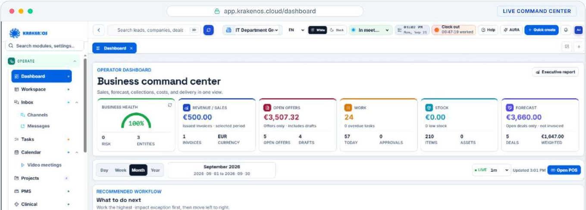

CRM & shitje
Nga kontakti te marrëdhënia me klientin.
Shiko detajet
- Klientë dhe kontakte
- Mundësi dhe ndjekje
- Aktivitete dhe histori
ITD LABS / KRAKEN OS
Një platformë modulare për njerëzit, klientët, financat dhe punën e përditshme. Pjesët lidhen rreth mënyrës si punon kompania jote.

Pamje nga prezantimi i produktitKRAKENOS
Nga kontakti te marrëdhënia me klientin.
Një vend për njerëzit dhe punën.
Pamje e lidhur e pjesës financiare.
Informacioni pranë procesit.
Pamje e inventarit pranë proceseve të kompanisë. Fushat, qasjet dhe lidhjet me modulet e tjera përcaktohen në konfigurim.
SIPAS BIZNESIT
Modulet, administrimi, rolet dhe përshtatjet sektoriale përcaktohen sipas projektit dhe verifikohen në demo.
Pamje nga prezantimi i produktit
Na trego ekipin dhe procesin. E nisim demonstrimin nga ajo që ka rëndësi për ty.
Kërko një demoPamje nga prezantimi i produktit. Modulet dhe kanalet e disponueshme varen nga konfigurimi, lejet dhe integrimet e miratuara.